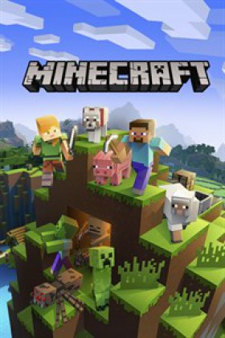

|
VideoJuego Favorito
Mi videojuego favorito es Minecraft, es un videojuego de mundo abierto
en donde el personaje principal llamado: steve, aparece sin ningun recurso, el personaje
debe embarcarse en una aventura, consiguiendo materiales, y construyendo estructuras.
Debido a que es un juego de mundo abierto, no posee un objetivo específico, permitiéndole
al jugador una gran libertad en cuanto a la elección de su forma de jugar.
A pesar de ello, el juego posee un sistema de logros.
El juego se centra en la colocación y destrucción de bloques, siendo que este se compone
de objetos tridimensionales cúbicos, colocados sobre un patrón de rejilla fija. Estos
cubos o bloques representan principalmente distintos elementos de la naturaleza, como
tierra, piedra, minerales, troncos, entre otros.

|